CSE 311: Foundations of Computing I, Spring 2023
Course Staff/Office Hours
In addition to the staff contact information, this page contains the most up-to-date listing of staff office hours (and their location). Office hours are subject to change, but we'll try to keep this page accurate at least a week into the future. Note: AC nth floor = Allen Center Breakout Space on Floor n.
| Monday | Tuesday | Wednesday | Thursday | Friday | |
|---|---|---|---|---|---|
| 9-9:30a | Grace Chen (AC 3rd floor) |
||||
| 9:30-10a | Yash Mishra (CSE2 131) |
Grace Chen (AC 3rd floor) |
Khanh Nguyen (CSE2 150) |
Yadi Wang (AC 5th floor) |
|
| 10-10:30a | Yash Mishra (CSE2 131) |
Khanh Nguyen (CSE2 150) |
Yadi Wang (AC 5th floor) |
||
| 10:30-11a | Lecture B (CSE2 G01) |
James Wilcox (CSE 440 or Zoom) |
Lecture B (CSE2 G01) |
Lecture B (CSE2 G01) |
|
| 11-11:30a | Lecture B (CSE2 G01) |
James Wilcox (CSE 440 or Zoom) |
Lecture B (CSE2 G01) |
Lecture B (CSE2 G01) |
|
| 11:30-12p | Paul Beame (CSE 668) |
Danny Augustinus (AC 2nd floor) |
Paul Beame (CSE 668) |
Paul Beame (CSE 668) |
|
| 12-12:30p | Danny Augustinus (AC 2nd floor) |
Kenny Ma (CSE2 152) |
|||
| 12:30-1p | Ben Zhang (AC 5th floor) |
Kenny Ma (CSE2 152) |
Varun Agrawal (AC 3rd floor) |
||
| 1-1:30p | Ben Zhang (AC 5th floor) |
Varun Agrawal (AC 3rd floor) |
|||
| 1:30-2p | Lecture A (CSE2 G01) |
Yusuf Hanafy (CSE 218) |
Lecture A (CSE2 G01) |
Lecture A (CSE2 G01) |
|
| 2-2:30p | Lecture A (CSE2 G01) |
Yusuf Hanafy (CSE 218) |
Lecture A (CSE2 G01) |
Lecture A (CSE2 G01) |
|
| 2:30-3p | Paul Beame (CSE 668) |
Nathan Akkaraphab (Zoom, see Canvas) |
Sally Dong (CSE 220) |
||
| 3-3:30p | Paul Beame (CSE 668) |
Nathan Akkaraphab (Zoom, see Canvas) |
|
|
Sally Dong (CSE 220) |
| 3:30-4p | Aria Tang (CSE2 151) |
|
|
|
|
| 4-4:30p | Aria Tang (CSE2 151) |
Lukshya Ganjoo (AC 2nd floor) |
|||
| 4:30-5p | |
Lukshya and Jacob (AC 2nd floor) |
|||
| 5-5:30p | Jacob Berg (AC 2nd floor) |
Krishna Panchap CSE2 121 |
|||
| 5:30-6p | Krishna Panchap CSE2 121 |

- Jacob Berg (he/him) (Instructor 12:00 PM - 1:00 PM)
- jacob33 [at] cs.washington.edu
- Office Hours: Tue 10:30am-11:30 (CSE 440)
- Lecture Section: A (SMI 211)
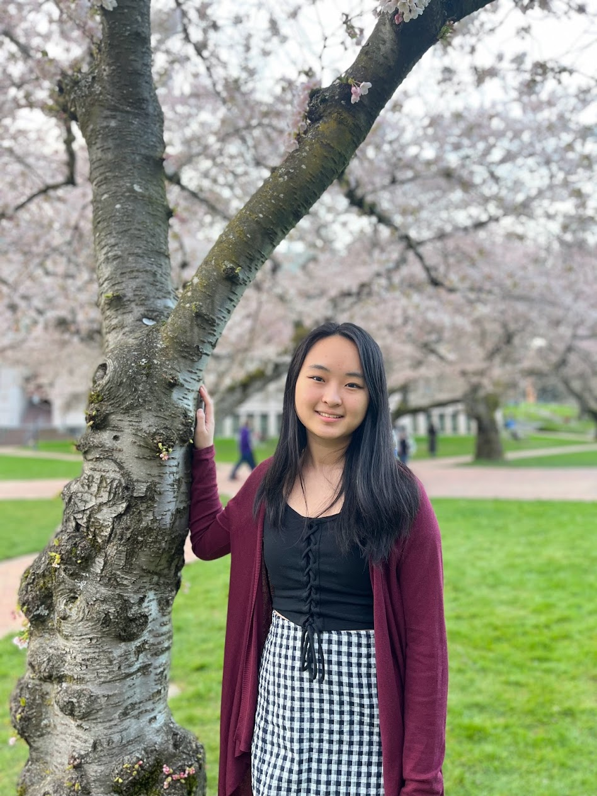
- Aria Tang (she/her)
- tangari [at] cs.washington.edu
- Section TBA
- Office Hours: Mon 3:30-4:20 (CSE2 151)
- Hey y'all! This is my third quarter TA-ing 311 and I'm super excited to work with you all this quarter. I'm a second-year in the Allen School, and outside of CS, I love playing piano, cooking, and anime. Feel free to stop by my OH and ask me about anything!
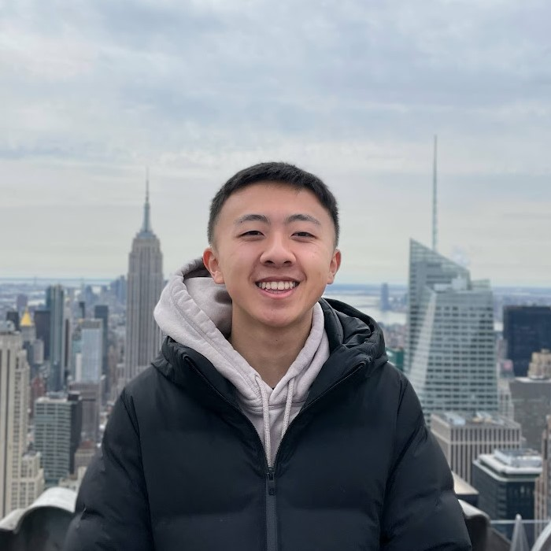
- Ben Zhang (he/him)
- bzhang0 [at] cs.washington.edu
- Section
- Office Hours: Tue 12:30-1:20 (AC 5th floor)
- Hello! I'm Ben, and I'm a third-year majoring in CS and minoring in Math. If I'm not in the labs, I'm either cooking, climbing, gaming, or watching 3b1b's latest video. CSE 311 is one of my top classes as it not only provides a strong foundation in logic and reasoning, but also opens the door to many practical applications in both industry and research. Feel free to reach out to chat about theory, math, or anything else! Looking forward to meeting all of you!
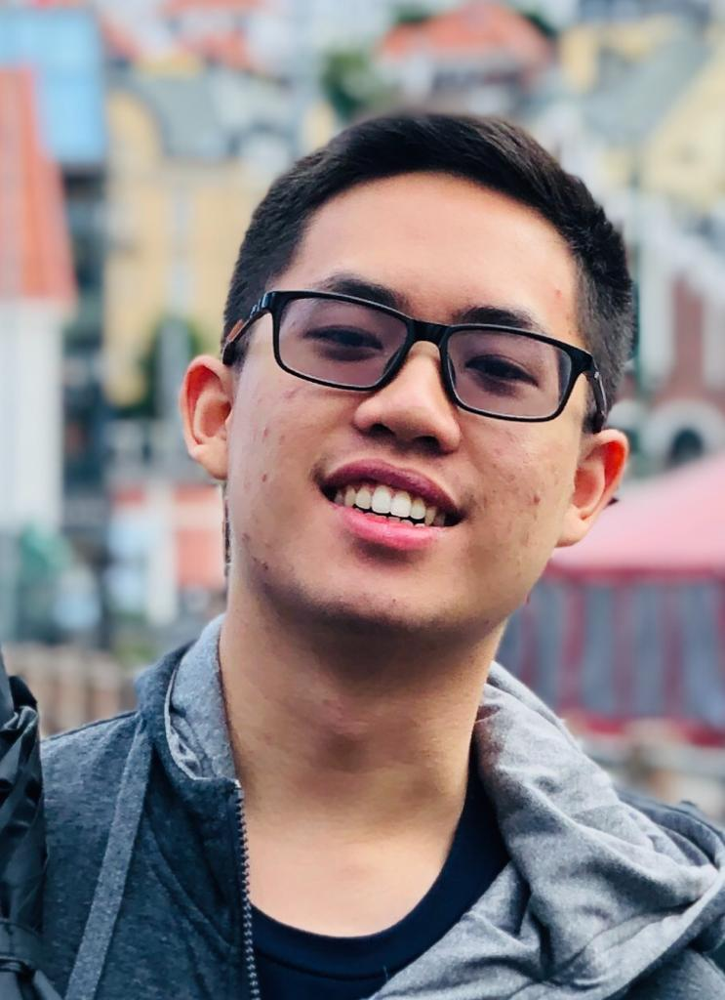
- Danny Agustinus (he/him)
- dannyagu [at] cs.washington.edu
- Section
- Office Hours: Tue 12:00-12:50 (AC 2nd floor)
- Hi everyone! This is my second time TAing 311 and I'm so excited to be here:) Currently a senior here and I'm really interested in systems programming in general. In my free time, I enjoy playing rhythm games, watching youtube, ping-pong, pool, and badminton. Look forward to meeting all of you and please do stop by to ask me anything:)
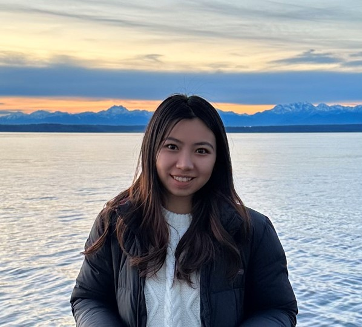
- Grace Chen (she/her)
- chengra [at] cs.washington.edu
- Section
- Office Hours: Tue 9:00-9:50 (AC 3rd floor)
- Hi, I'm Grace! I am a senior studying CS and Applied Math. I am super excited to be TAing 311 again this quarter. This will be my 4th time TAing 311 as I love the concepts taught in this course. Outside of class, I enjoy going bakery/cafe hopping and cooking. Looking forward to meeting y'all!
- Jacob Berg (he/him)
- jacob33 [at] cs.washington.edu
- Section
- Office Hours: Tue 4:30-5:30 (AC 2nd floor)
- Hello, I'm Jacob! I grew up in Seattle and am studying Computer Science with a particular interest in robotics. In my spare time I enjoy playing hockey, going climbing (hopefully outdoors soon!) walking my dog, and playing board games with friends. Looking forward to meeting you all this quarter!
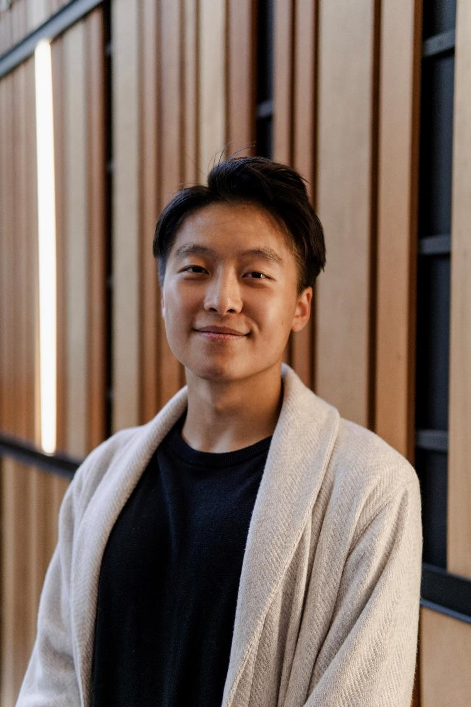
- Kenny Ma (he/him)
- kwyma [at] cs.washington.edu
- Section
- Office Hours: Wed 12:00-12:50 (CSE2 152)
- I'm stoked to be back TAing 311 this quarter! I used 311 concepts in my internship last summer and this renewed my interest in theory. Outside of class, I like playing basketball and climbing. Ask me about applying theory to SWE, the entrepreneurship minor, or BSMS!
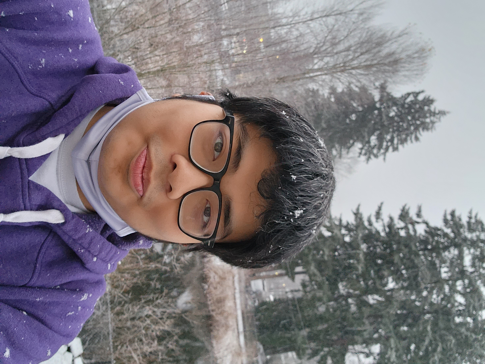
- Khanh Nguyen (he/him)
- nbnkhanh [at] cs.washington.edu
- Section
- Office Hours:Wed 9:30-10:20 (CSE2 150)
- Hi, I am Khanh! I am a senior majoring in CS and will graduate this quarter! This is my 3rd quarter TAing and my first time for 311, so I'm super excited. Outside of class, I enjoy hanging out with friends, traveling, and swimming. Feel free to reach out if you need anything.
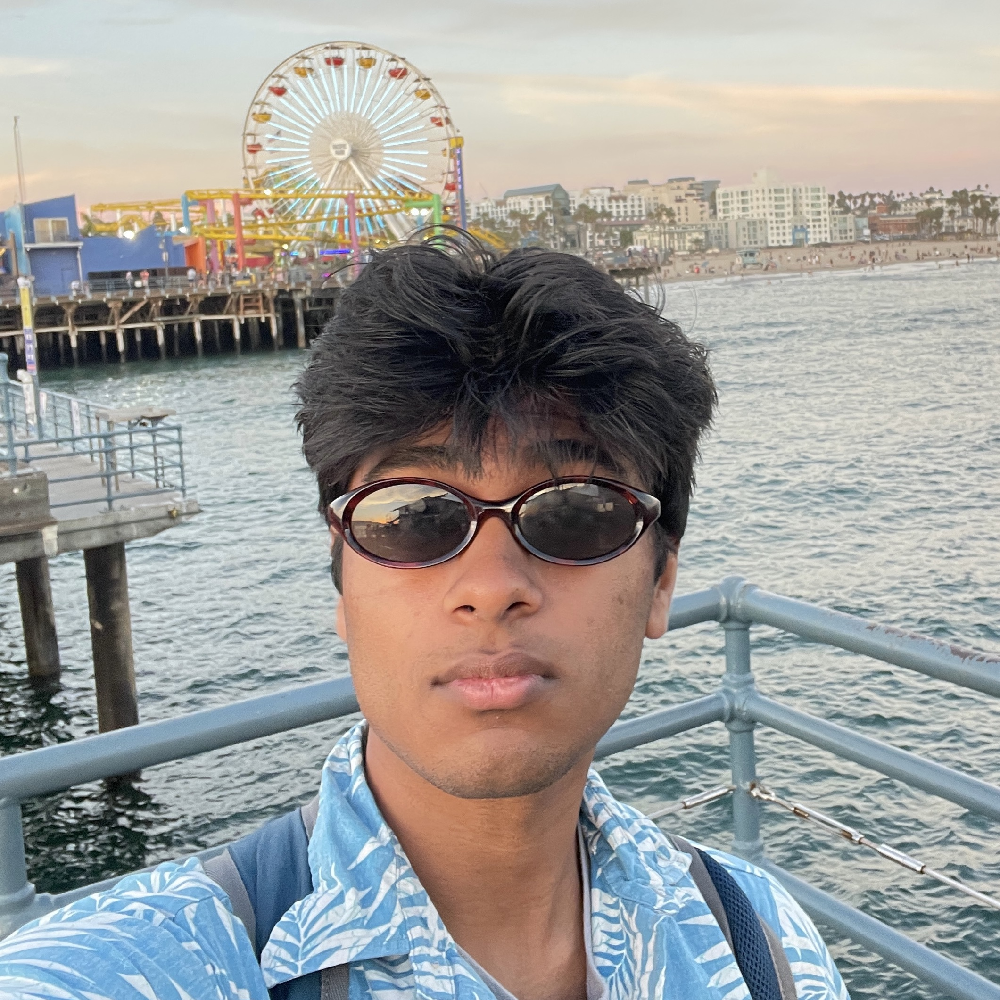
- Krishna Panchap (he/him)
- kpanchap [at] cs.washington.edu
- Section
- Office Hours: Fri 5:00-5:50 (CSE2 121)
- Hey Everyone! I'm a second-year studying CS from Redmond, WA and I'm excited to be TAing 311 for the first time this quarter. Outside of school, I love to play badminton and go on runs with my dog. Feel free to reach out about anything and everything and I’m excited to meet y’all!
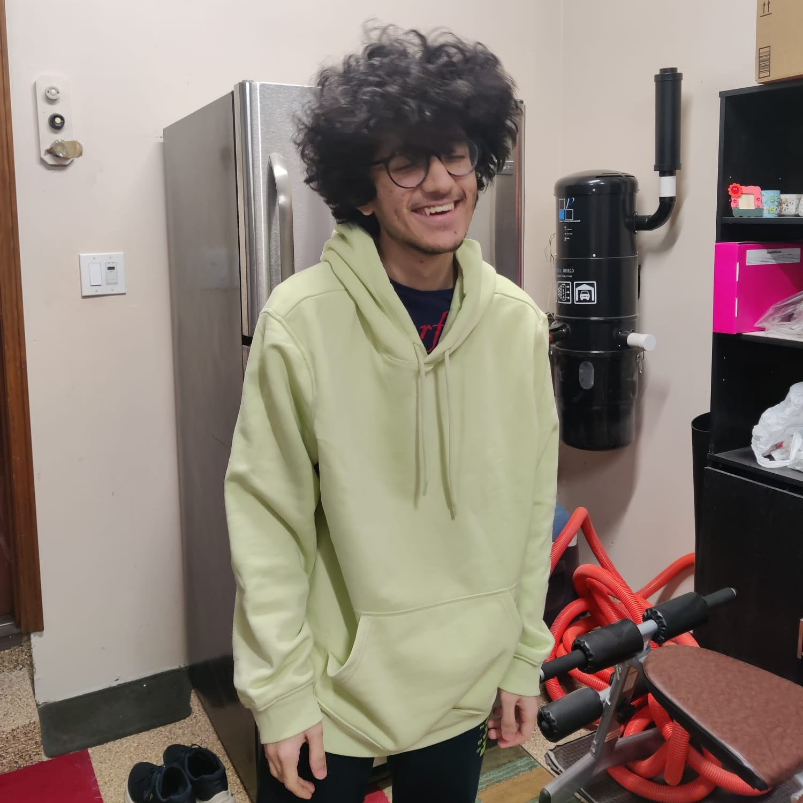
- Lukshya Ganjoo (he/him)
- lganjoo [at] cs.washington.edu
- Section
- Office Hours: Tue 4:00-4:50 (AC 2nd floor)
- Hello there! My name is Lukshya Ganjoo and I'm a sophomore majoring in math and cs. When I'm not obsessing over the next big thing in cs theory or trying to decipher an algebra proof, I spend a lot of my time writing and finding novel ways to spruce up the humble bagel and toast. Ask me about math, baking, cooking and all things cs theory :) Looking forward to meeting you all this quarter!
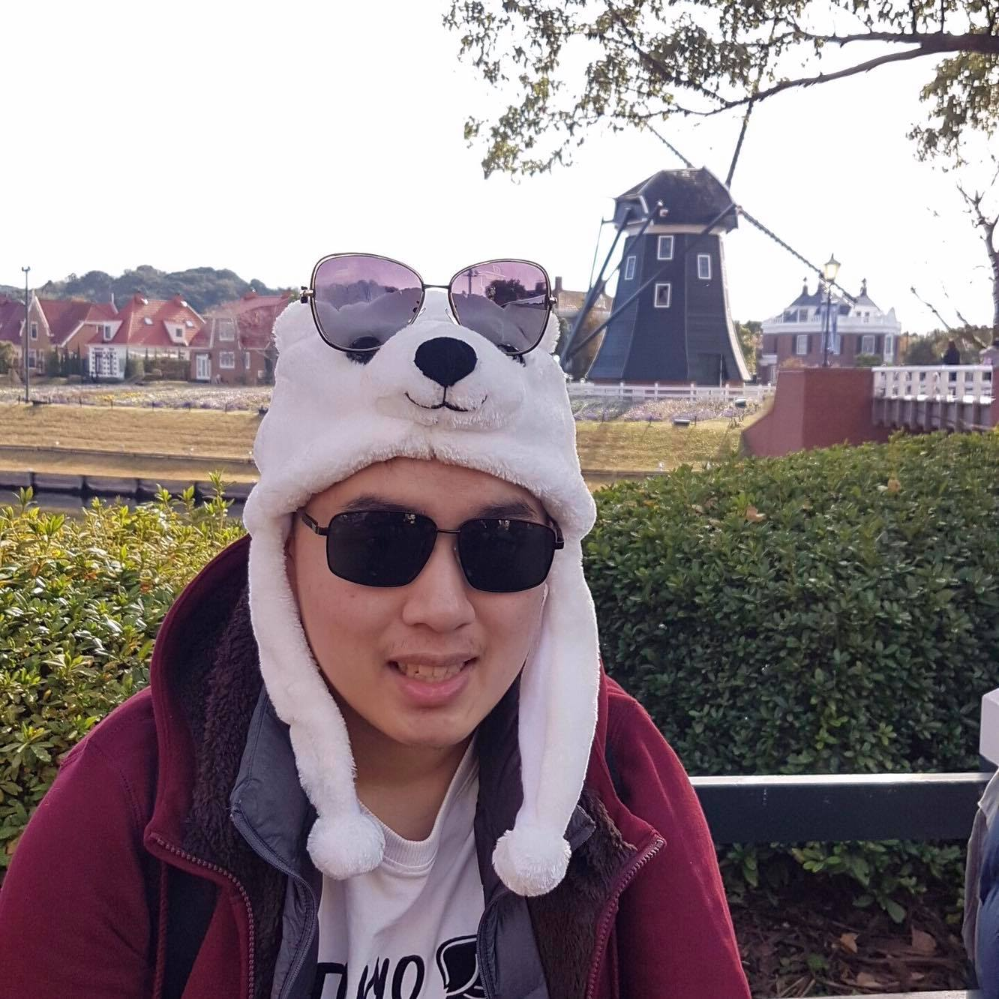
- Nathan Akkaraphab (he/him)
- akkanath [at] cs.washington.edu
- Section
- Office Hours: Tue 2:30 (Zoom, see Canvas)
- Hi everyone! I'm Nathan and I'm a MS student studying Amath. This is my first time TA-ing this class and my last quarter at UW :). Outside school, I have been mostly playing video games (OW, Genshin), watching anime, and solving Rubik's cube.
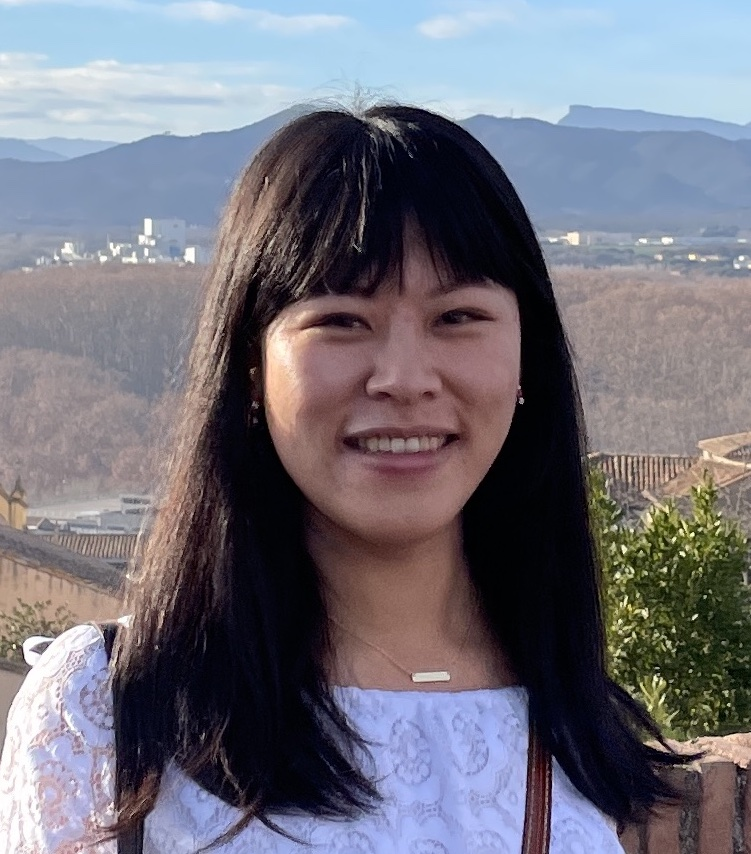
- Sally Dong (she/her)
- sallyqd [at] cs.washington.edu
- Section
- Office Hours: Fri 2:30 (CSE 220)
- I'm a senior PhD student in theoretical computer science, here to sharpen my teaching skills! In my free time I enjoy hiking, photography, playing tennis, and sometimes sitting in on undergrad humanities classes for fun :)
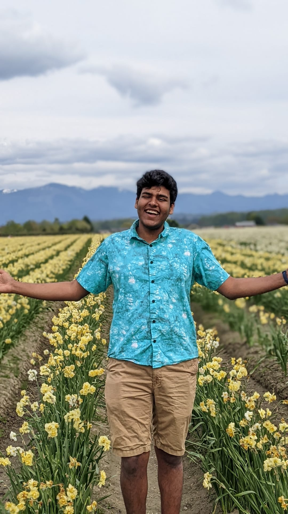
- Varun Agrawal (he/him)
- varaga [at] cs.washington.edu
- Section
- Office Hours: Fri, 12:30 (AC 3rd floor)
- Hey! I'm a senior in CSE from Bangalore, India, and this is my second time TAing 311. I derive the most enjoyment from the math-y parts of CS and love working on pattern problems and algorithms. I spend my free time playing all kinds of racquet sports and competitive chess for the UW Intercollegiate Team.
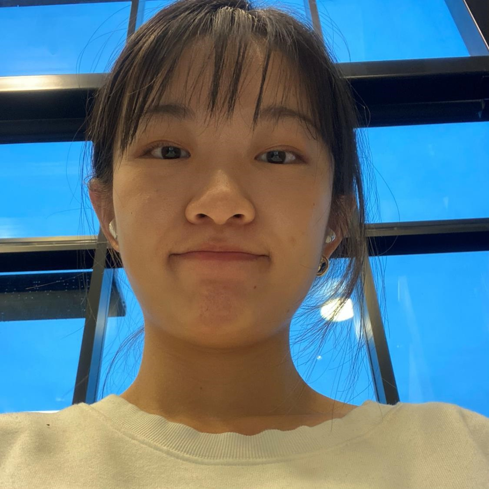
- Yadi Wang (he/him)
- yadiw [at] cs.washington.edu
- Section
- Office Hours:
- Hey, I am Yadi! I am a BS/MS student in CSE, and this is my 4th quarter TAing for 311. Come and chat with me if you have any questions regarding double major, research, or grad school application - in exchange, please give me some advice on (easy!) outdoor hobbies :P
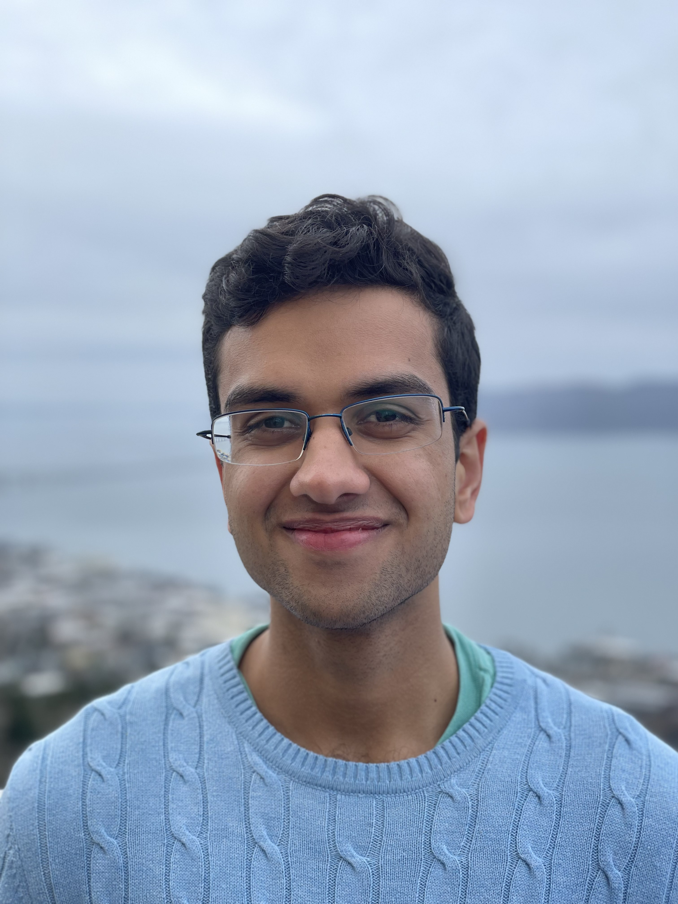
- Yash Mishra (he/him)
- m7yash [at] cs.washington.edu
- Section
- Office Hours: Mon 9:30 (CSE2 131)
- Hey everyone, I’m Yash! I grew up in San Jose and I am a second-year student majoring in Computer Science. In my free time, I play and watch cricket, go on long walks, and build things for fun. I look forward to meeting all of you!
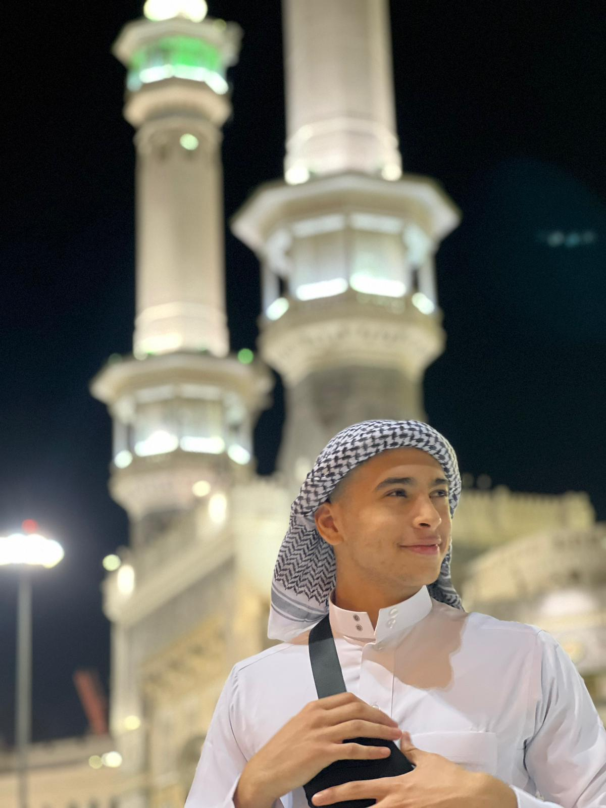
- Yusuf Hanafy (he/him)
- yhanafy [at] cs.washington.edu
- Section
- Office Hours:
- Hey everyone! My name is Yusuf Hanafy and I am a senior computer science student with a passion for teaching, algorithms, and natural language processing. In my free time, I enjoy playing soccer and watching various sports such as Formula 1, soccer, football, and a little bit of NBA. I am always open to new opportunities and welcome any chance to connect. I also love experimenting with cutting-edge technology like OpenAI's Chat GPT.